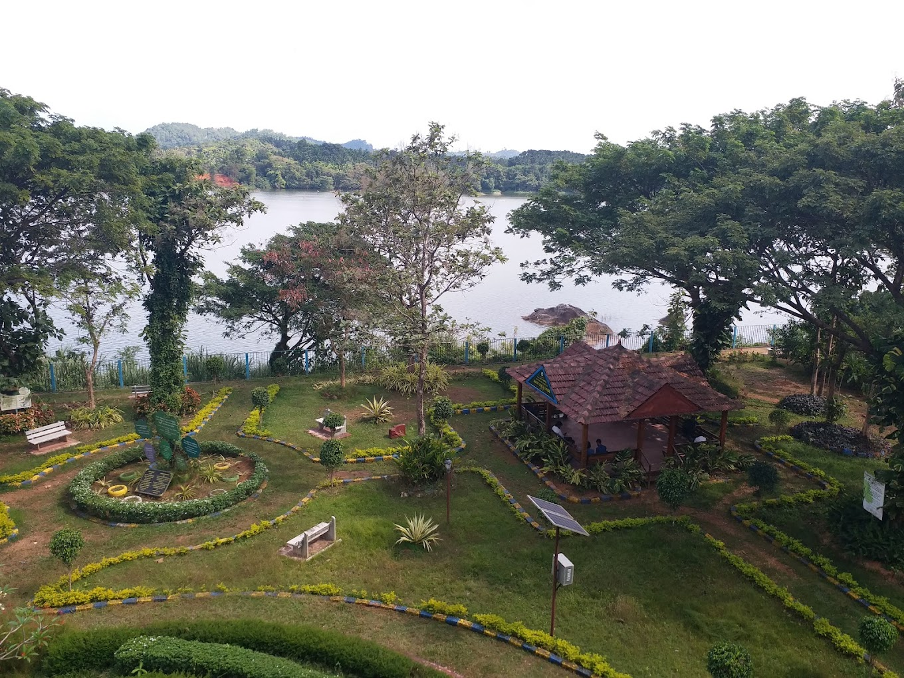
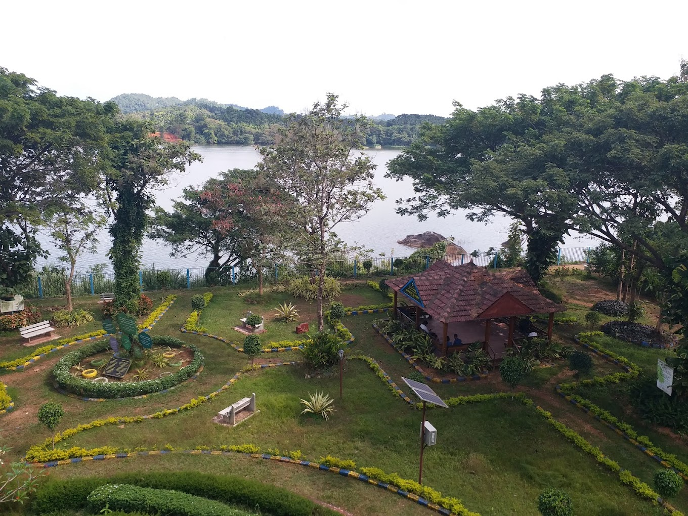

Salumarada Thimmakka Park Bantwal
 

Salumarada Thimmakka Park, located on BC Road in Bantwal in the Dakshina Kannada district of Karnataka, is a significant environmental and cultural landmark named in honor of the renowned environmentalist Salumarada Thimmakka. The park celebrates her remarkable contributions to afforestation and environmental sustainability. Salumarada Thimmakka, born in a rural area of Karnataka, is celebrated for her lifelong dedication to planting and nurturing trees. Her tireless efforts transformed barren lands into lush, green spaces, earning her widespread acclaim and recognition. Her work has been a beacon of hope and inspiration for environmentalists and conservationists around the world. The park on BC Road is designed to reflect Thimmakka’s legacy and promote environmental awareness. It features expansive green spaces, landscaped gardens, and various amenities aimed at enhancing visitors' experiences. The park provides a serene environment where people can connect with nature, learn about the importance of trees and forests, and be inspired by Thimmakka’s story. Educational exhibits within the park offer insights into Thimmakka's life and her extraordinary contributions to environmental conservation. Additionally, the park serves as a community space for events and activities focused on sustainability and ecological education. Salumarada Thimmakka Park stands as a tribute to the profound impact of Thimmakka's work and continues to inspire visitors to engage in environmental stewardship. It is not only a place of beauty and tranquility but also a center for raising awareness about the crucial role of trees and conservation in maintaining the health of our planet. The Forest Department has been chalking out programmes to maintain balance in nature. As part of its programmes, tree parks are being developed in the Dakshina Kannada district.
Note:
1.No food was taken inside the park
2.Plastic is strictly prohibited inside the park
| Entry Fees | |
|---|---|
| 20rs | For Adults |
| 10rs | For children(Below 15yr) |
Location
Find us at: near govt hospital bantwal,bcroad
About Us
Our park offers a tranquil escape from the hustle and bustle of everyday life. Enjoy walking trails, scenic views, and various outdoor activities.and there is a beautiful view of river in the side of the park